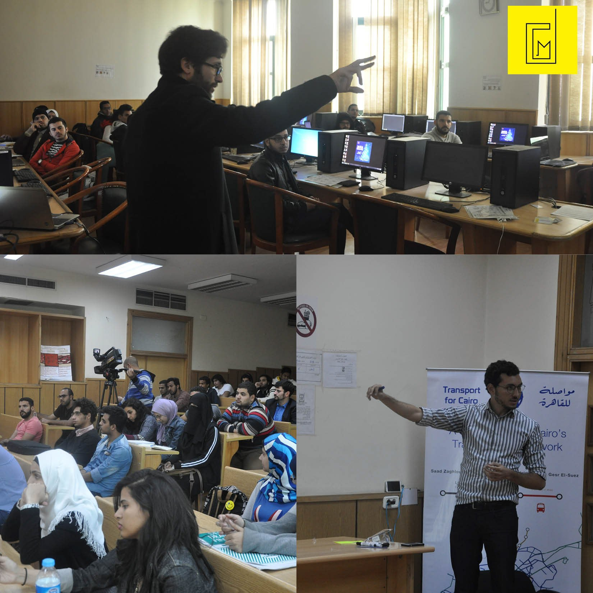
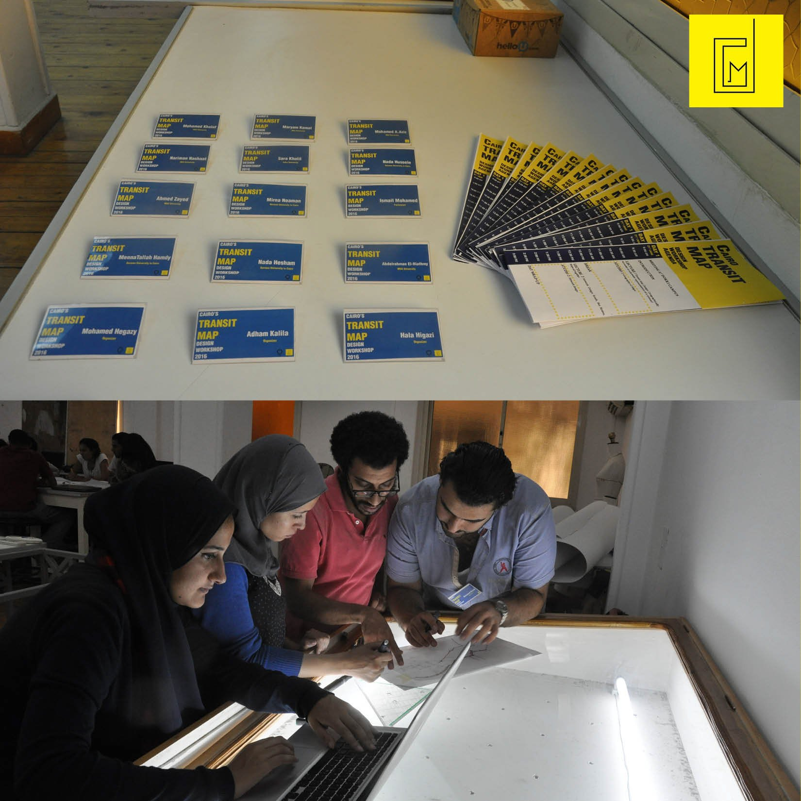

/ INITIATIVE — TRAINING & WORKSHOP
Desert City Mappers
An MSA University initiative to map and document the informal services of Cairo’s desert settlements — one that began as a graphic-design training course and grew into a three-day workshop building the city’s first crowd-designed transit map.

/ THE INITIATIVE
Mapping the services the city leaves off the map.
Desert City Mappers is an MSA University initiative — founded by Mohamed Rafik Sadek and L.A. Hala Higazy — that sets out to map and document the informal services of Cairo’s desert settlements. It began with a graphic-design training course, teaching students representation, mapping and infographics, to prepare them as a team for the fieldwork to come.
The workshop that followed put the training to use: producing the first-ever Cairo transit map, arrived at through trial and error in the search for the most readable design.
To build a comprehensive public-transport map for Cairo, Transport for Cairo (TfC) teamed up with Desert City Mappers (DCM) on a three-day workshop hosted by MSA University, calling students from built-environment and graphic-design disciplines across the city. Selection ran through an application assignment — redesigning the Cairo metro map — which diversified the team and brought a wide range of skills to the table. The work was deliberately experimental: with real-life data prepared and Cairo’s density in play, there was no preconceived image of the final map. Short lectures on transit-map theory and international examples guided the process, and a daily “call for action” pushed each round of designs forward. The objective — visualising real-life data for 20 of the city’s bus lines — was met despite a congested schedule and Ramadan hours, and the maps that came out of it sparked lively debate on both sides of the table.
